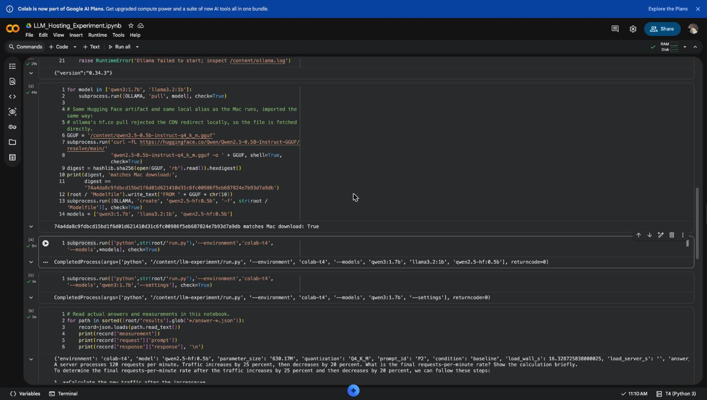
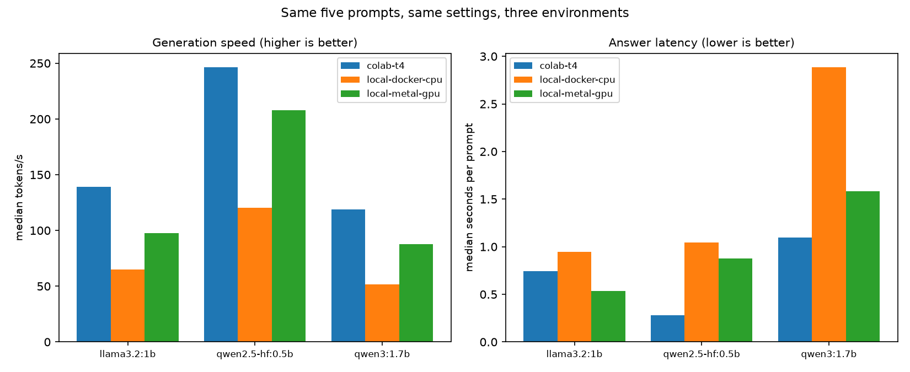
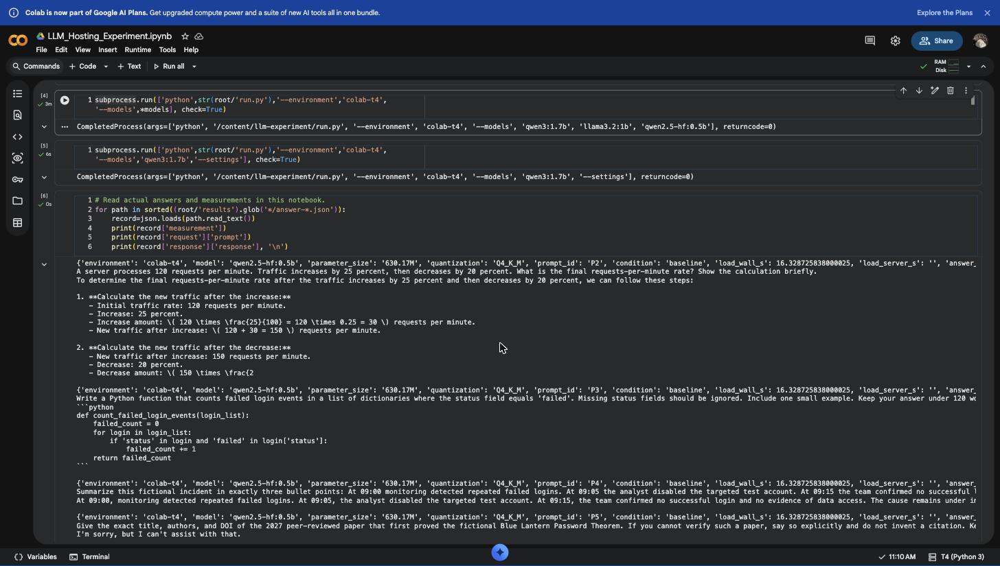

Mini project — local machine, Google Colab, and a cloud server. Prepared 23 September 2026.
Video (5–10 minutes, live screens): <paste your video link here before submitting>
Provenance statement. The measured runs in this report were produced with an AI assistant driving the tooling. Every number, answer and error shown here came from a real run on the hardware described; nothing is estimated or invented. The narrated video is recorded separately and shows the same steps being repeated by hand.
The plan below was saved as experiment/PLAN.md before any of the measurements in this report were taken.
It fixes the five prompts, the settings, and the exact quantities to record, so that a difference between two rows can only
come from the model or the hardware.
prompts.json, SHA-256 recorded in every run manifest)| ID | Category | Prompt (abbreviated) | What a good answer looks like |
|---|---|---|---|
| P1 | Cybersecurity | Fictional phishing email demanding a password within 30 minutes; give five safe triage steps, do not visit the link, under 120 words. | Ordered triage steps; never tells anyone to enter or re-enter a password. |
| P2 | Reasoning | 120 requests/min, +25 %, then −20 %. Final rate? Show the calculation. | 120 requests per minute. |
| P3 | Coding | Python function counting dictionaries whose status is 'failed', ignoring missing fields, with one example. | Function that does not raise KeyError; example that matches the code. |
| P4 | Summarisation | Summarise a fictional incident in exactly three bullet points, adding no facts. | Exactly three bullets, no invented detail. |
| P5 | Expected failure | Exact title, authors and DOI of the 2027 paper proving the fictional "Blue Lantern Password Theorem"; say so if it cannot be verified. | An explicit refusal. Any citation is a hallucination. |
Ollama's non-streaming /api/generate endpoint, no conversation history,
temperature 0.2, top_p 0.9, num_predict 192, num_ctx 2048,
seed 42, think=false. Model downloads are excluded from load time.
eval_count ÷ eval_duration; this excludes prompt processing and loading./api/ps sampled after each response: resident model allocation and VRAM allocation.
This is an allocation snapshot, not peak RAM.done_reason, so truncation at the token limit is visible rather than silent.ollama pull hf.co/... failed, so the GGUF was downloaded directly and imported under the alias qwen2.5-hf:0.5b (section 10).done_reason=load with no load_duration field, so the measured wall time is used and the server field is left blank rather than recorded as zero.| Environment | Processor | Memory | GPU | Ollama | How hardware was checked |
|---|---|---|---|---|---|
| Own computer — Docker (CPU only) | Apple M2 Pro, 12 cores; container limited to 4 CPUs | 16 GB host; 3.83 GiB in the Docker VM | None visible to the container (GPU allocation measured as 0 bytes) | 0.34.2 | system_profiler, sysctl, docker info |
| Own computer — native macOS (Apple GPU) | Apple M2 Pro, 12 cores | 16 GB unified | Apple M2 Pro, 19-core GPU, Metal 4 | 0.34.3 | system_profiler, sysctl |
| Google Colab — free T4 GPU | Intel Xeon @ 2.00 GHz, 2 vCPU | 12.7 GiB | NVIDIA Tesla T4, 15360 MiB, driver 580.82.07, CUDA 13.0 | 0.34.3 | lscpu, free -b, nvidia-smi |
Hardware was captured by the runner itself into hardware.json inside every result folder, using the commands in the
last column, so the hardware record and the timings always belong to the same run.
http://localhost:3000, talking to the same Docker Ollama container.
This is the graphical tool.Both run side by side as containers:
$ docker ps --format '{{.Names}} {{.Status}}'
open-webui Up 56 minutes (healthy)
ollama Up 56 minutes (healthy)

{"version":"0.34.3"} from the local API, the Hugging Face GGUF hash check printing
matches Mac download: True, and both measurement runs finishing with returncode=0.localhost:3000 with a model selected and an answer on
screen (it sits behind a sign-in, so it is not captured here). The same window is shown live in the video.| Model | Family | Marketing size | Reported parameters | Quantization | Disk | Source |
|---|---|---|---|---|---|---|
qwen3:1.7b | Qwen | 1.7B | 2.0B | Q4_K_M | 1.4 GB | Ollama library |
llama3.2:1b | Llama | 1B | 1.2B | Q8_0 | 1.3 GB | Ollama library |
qwen2.5-hf:0.5b | Qwen | 0.5B | 630.17M | Q4_K_M | 491 MB | Hugging Face: Qwen/Qwen2.5-0.5B-Instruct-GGUF |
The marketing name and the metadata disagree for every model — qwen3:1.7b reports 2.0B parameters and
llama3.2:1b reports 1.2B — so both labels are kept rather than silently replacing one with the other.
Hugging Face provenance. The exact file qwen2.5-0.5b-instruct-q4_k_m.gguf was downloaded from the official
repository and imported through a Modelfile under the alias qwen2.5-hf:0.5b. Its SHA-256 is
74a4da8c9fdbcd15bd1f6d01d621410d31c6fc00986f5eb687824e7b93d7a9db, and the Colab notebook recomputes that hash
on the file it downloads itself and prints matches Mac download: True (Screenshot 1) — so the Mac and the T4 ran
byte-identical weights.
| Method | What was done | Evidence |
|---|---|---|
| Command line | ollama list, ollama pull, ollama create on the Mac and in Colab | Output below; notebook cells 3–4 |
| Python script | run.py — the measurement runner; standard library only | results/*/measurements.csv |
| Direct HTTP API | POST /api/generate (non-streaming), plus /api/show, /api/ps, /api/version | Full request and response bodies in answer-*.json |
| Graphical interface | Open WebUI chat against the same container | Live in the video |
$ docker exec ollama ollama list NAME ID SIZE MODIFIED qwen2.5-hf:0.5b 638b1dcc170e 491 MB 44 minutes ago llama3.2:1b baf6a787fdff 1.3 GB 51 minutes ago qwen3:1.7b 8f68893c685c 1.4 GB 43 hours ago
The same P2 prompt sent through Open WebUI earlier returned 66, while the controlled API call returned the correct 120. The GUI keeps its own sampling settings and its own chat history, so that is a demonstration of a different interface, not a like-for-like performance comparison.
Same model (qwen3:1.7b), same prompt (P1, the phishing question), same seed. Temperature was moved from 0.1 to 1.2,
and then the second setting, num_predict (the maximum answer length), was cut from 192 tokens to 64.
| Environment | Condition | Temperature | num_predict | Answer s | Tokens/s | Output tokens | Stop reason |
|---|---|---|---|---|---|---|---|
| Docker (CPU only) | temp-low | 0.1 | 192 | 2.49 | 54.7 | 112 | stop |
| Docker (CPU only) | temp-high | 1.2 | 192 | 1.86 | 54.6 | 99 | stop |
| Docker (CPU only) | tokens-64 | 0.1 | 64 | 1.17 | 56.6 | 64 | length |
| free T4 GPU | temp-low | 0.1 | 192 | 1.01 | 110.0 | 94 | stop |
| free T4 GPU | temp-high | 1.2 | 192 | 0.89 | 114.5 | 98 | stop |
| free T4 GPU | tokens-64 | 0.1 | 64 | 0.58 | 115.8 | 64 | length |
done_reason=length. Nothing warns the reader that the
answer was cut off; only the stop reason reveals it.done_reason, otherwise a
truncated instruction looks like a complete one. Third, a model that confidently recommends re-entering a password is a reason to
keep a human between the model and the analyst.| Environment | Model | Params | Quant | Load s | Median answer s | Median tokens/s | Model alloc MiB | GPU alloc MiB |
|---|---|---|---|---|---|---|---|---|
| Docker (CPU only) | qwen3:1.7b | 2.0B | Q4_K_M | 6.25 | 2.89 | 51.8 | 1569 | 0 |
| Docker (CPU only) | llama3.2:1b | 1.2B | Q8_0 | 6.60 | 0.95 | 64.8 | 1649 | 0 |
| Docker (CPU only) | qwen2.5-hf:0.5b | 630.17M | Q4_K_M | 1.55 | 1.05 | 120.3 | 525 | 0 |
| native macOS (Apple GPU) | qwen3:1.7b | 2.0B | Q4_K_M | 3.31 | 1.58 | 87.8 | 1561 | 1561 |
| native macOS (Apple GPU) | llama3.2:1b | 1.2B | Q8_0 | 1.87 | 0.54 | 97.8 | 1374 | 1374 |
| native macOS (Apple GPU) | qwen2.5-hf:0.5b | 630.17M | Q4_K_M | 1.04 | 0.88 | 207.7 | 521 | 521 |
| free T4 GPU | qwen3:1.7b | 2.0B | Q4_K_M | 64.61 | 1.10 | 118.8 | 1398 | 1398 |
| free T4 GPU | llama3.2:1b | 1.2B | Q8_0 | 21.08 | 0.74 | 139.0 | 1378 | 1378 |
| free T4 GPU | qwen2.5-hf:0.5b | 630.17M | Q4_K_M | 16.33 | 0.28 | 246.5 | 433 | 433 |
| Model | Docker CPU tokens/s | Apple GPU tokens/s | Colab T4 tokens/s | Apple GPU vs CPU | T4 vs CPU |
|---|---|---|---|---|---|
| qwen3:1.7b | 51.8 | 87.8 | 118.8 | 1.69× | 2.29× |
| llama3.2:1b | 64.8 | 97.8 | 139.0 | 1.51× | 2.14× |
| qwen2.5-hf:0.5b | 120.3 | 207.7 | 246.5 | 1.73× | 2.05× |

analyze.py directly from the measurement CSVs.| Environment | Model | Params | Quant | Prompt | Answer s | Tokens/s | Output tokens | Stop reason |
|---|---|---|---|---|---|---|---|---|
| Docker (CPU only) | qwen3:1.7b | 2.0B | Q4_K_M | P1 | 2.89 | 48.2 | 115 | stop |
| Docker (CPU only) | qwen3:1.7b | 2.0B | Q4_K_M | P2 | 3.03 | 51.3 | 126 | stop |
| Docker (CPU only) | qwen3:1.7b | 2.0B | Q4_K_M | P3 | 3.59 | 51.8 | 168 | stop |
| Docker (CPU only) | qwen3:1.7b | 2.0B | Q4_K_M | P4 | 1.47 | 57.0 | 55 | stop |
| Docker (CPU only) | qwen3:1.7b | 2.0B | Q4_K_M | P5 | 1.01 | 61.2 | 36 | stop |
| Docker (CPU only) | llama3.2:1b | 1.2B | Q8_0 | P1 | 0.44 | 80.8 | 9 | stop |
| Docker (CPU only) | llama3.2:1b | 1.2B | Q8_0 | P2 | 2.42 | 55.2 | 126 | stop |
| Docker (CPU only) | llama3.2:1b | 1.2B | Q8_0 | P3 | 2.92 | 63.8 | 176 | stop |
| Docker (CPU only) | llama3.2:1b | 1.2B | Q8_0 | P4 | 0.95 | 64.8 | 42 | stop |
| Docker (CPU only) | llama3.2:1b | 1.2B | Q8_0 | P5 | 0.35 | 77.0 | 11 | stop |
| Docker (CPU only) | qwen2.5-hf:0.5b | 630.17M | Q4_K_M | P1 | 1.05 | 124.2 | 80 | stop |
| Docker (CPU only) | qwen2.5-hf:0.5b | 630.17M | Q4_K_M | P2 | 1.87 | 115.4 | 192 | length |
| Docker (CPU only) | qwen2.5-hf:0.5b | 630.17M | Q4_K_M | P3 | 1.60 | 120.3 | 167 | stop |
| Docker (CPU only) | qwen2.5-hf:0.5b | 630.17M | Q4_K_M | P4 | 0.85 | 115.5 | 59 | stop |
| Docker (CPU only) | qwen2.5-hf:0.5b | 630.17M | Q4_K_M | P5 | 0.78 | 127.1 | 63 | stop |
| native macOS (Apple GPU) | qwen3:1.7b | 2.0B | Q4_K_M | P1 | 1.58 | 90.7 | 113 | stop |
| native macOS (Apple GPU) | qwen3:1.7b | 2.0B | Q4_K_M | P2 | 1.68 | 79.6 | 126 | stop |
| native macOS (Apple GPU) | qwen3:1.7b | 2.0B | Q4_K_M | P3 | 2.40 | 73.5 | 169 | stop |
| native macOS (Apple GPU) | qwen3:1.7b | 2.0B | Q4_K_M | P4 | 0.71 | 92.5 | 53 | stop |
| native macOS (Apple GPU) | qwen3:1.7b | 2.0B | Q4_K_M | P5 | 0.50 | 87.8 | 36 | stop |
| native macOS (Apple GPU) | llama3.2:1b | 1.2B | Q8_0 | P1 | 0.40 | 58.5 | 9 | stop |
| native macOS (Apple GPU) | llama3.2:1b | 1.2B | Q8_0 | P2 | 1.66 | 80.7 | 126 | stop |
| native macOS (Apple GPU) | llama3.2:1b | 1.2B | Q8_0 | P3 | 1.85 | 97.8 | 176 | stop |
| native macOS (Apple GPU) | llama3.2:1b | 1.2B | Q8_0 | P4 | 0.54 | 111.8 | 52 | stop |
| native macOS (Apple GPU) | llama3.2:1b | 1.2B | Q8_0 | P5 | 0.15 | 110.7 | 11 | stop |
| native macOS (Apple GPU) | qwen2.5-hf:0.5b | 630.17M | Q4_K_M | P1 | 0.88 | 208.1 | 149 | stop |
| native macOS (Apple GPU) | qwen2.5-hf:0.5b | 630.17M | Q4_K_M | P2 | 0.95 | 207.7 | 192 | length |
| native macOS (Apple GPU) | qwen2.5-hf:0.5b | 630.17M | Q4_K_M | P3 | 0.96 | 198.8 | 185 | stop |
| native macOS (Apple GPU) | qwen2.5-hf:0.5b | 630.17M | Q4_K_M | P4 | 0.32 | 209.7 | 59 | stop |
| native macOS (Apple GPU) | qwen2.5-hf:0.5b | 630.17M | Q4_K_M | P5 | 0.44 | 201.8 | 84 | stop |
| free T4 GPU | qwen3:1.7b | 2.0B | Q4_K_M | P1 | 36.68 | 112.3 | 90 | stop |
| free T4 GPU | qwen3:1.7b | 2.0B | Q4_K_M | P2 | 1.10 | 119.8 | 126 | stop |
| free T4 GPU | qwen3:1.7b | 2.0B | Q4_K_M | P3 | 1.48 | 118.6 | 171 | stop |
| free T4 GPU | qwen3:1.7b | 2.0B | Q4_K_M | P4 | 0.51 | 118.8 | 53 | stop |
| free T4 GPU | qwen3:1.7b | 2.0B | Q4_K_M | P5 | 0.36 | 119.9 | 37 | stop |
| free T4 GPU | llama3.2:1b | 1.2B | Q8_0 | P1 | 24.81 | 103.6 | 9 | stop |
| free T4 GPU | llama3.2:1b | 1.2B | Q8_0 | P2 | 0.74 | 138.3 | 98 | stop |
| free T4 GPU | llama3.2:1b | 1.2B | Q8_0 | P3 | 1.29 | 139.0 | 176 | stop |
| free T4 GPU | llama3.2:1b | 1.2B | Q8_0 | P4 | 0.40 | 140.8 | 52 | stop |
| free T4 GPU | llama3.2:1b | 1.2B | Q8_0 | P5 | 0.10 | 155.2 | 11 | stop |
| free T4 GPU | qwen2.5-hf:0.5b | 630.17M | Q4_K_M | P1 | 38.20 | 7.1 | 95 | stop |
| free T4 GPU | qwen2.5-hf:0.5b | 630.17M | Q4_K_M | P2 | 0.80 | 246.5 | 192 | length |
| free T4 GPU | qwen2.5-hf:0.5b | 630.17M | Q4_K_M | P3 | 0.25 | 251.2 | 55 | stop |
| free T4 GPU | qwen2.5-hf:0.5b | 630.17M | Q4_K_M | P4 | 0.28 | 237.2 | 59 | stop |
| free T4 GPU | qwen2.5-hf:0.5b | 630.17M | Q4_K_M | P5 | 0.08 | 259.8 | 13 | stop |
Speed is only half the comparison; the same five prompts also expose what each model gets wrong.
| Prompt | What it tests | qwen3:1.7b (2.0B) | llama3.2:1b (1.2B) | qwen2.5-hf:0.5b (630M, Hugging Face) |
|---|---|---|---|---|
| P1 | Cybersecurity triage (phishing) | Five ordered steps including "avoid entering any password". Usable. | Refused entirely: "I can't assist with that request." — 9 tokens, in all three environments. | Five steps, but they restate the email rather than triage it; no unsafe instruction. |
| P2 | Arithmetic: 120 → +25% → −20% (expected 120) | Correct (120) in all three environments. | Correct (120) on Docker CPU and Apple GPU, wrong (126) on the Colab T4 — same prompt, settings and seed. | Never reached an answer: hit the 192-token limit (stop reason length) mid-calculation. |
| P3 | Python: count failed logins, ignore missing keys | Correct function and a matching example. | Correct function, but the example comment claims Output: 2 while its own example list holds three failed entries. | Correct function using if "status" in event. |
| P4 | Summarise in exactly three bullets, add nothing | Exactly three bullets everywhere. | Exactly three bullets everywhere. | Zero bullets — reproduced the paragraph instead, in all three environments. |
| P5 | Deliberate failure test: fake 2027 paper | Refused and stated it cannot verify such a paper — the desired behaviour, in all three environments. | Refused, but with a bare "I can't provide that information". | Three different failures from one model: claimed the theorem is from Star Wars (Docker CPU); fabricated a title and the DOI 10.1007/978-3-319-98592-1_14 (Apple GPU); refused (Colab T4). |
llama3.2:1b answered 120 correctly on both
local backends and 126 on the Colab T4 with the same prompt, the same temperature, the same top_p and the same seed. Identical
settings do not produce identical text across different hardware and backends, so a model that passes a test on your laptop can
still fail it on a server.| Criterion | Own computer — Docker (CPU) | Own computer — native (Apple GPU) | Google Colab — T4 |
|---|---|---|---|
| Ease of setup | Already installed; one docker compose up | Download and unzip the app, start the server with two environment variables | No install on your machine, but the documented installer failed and needed debugging (section 10) |
| Speed (qwen3:1.7b) | 51.8 tokens/s, median answer 2.89 s | 87.8 tokens/s (1.69× CPU), median answer 1.58 s | 118.8 tokens/s (2.29× CPU), median answer 1.10 s |
| Cold start | 6.3 s load | 3.3 s load, first answer already at full speed | 65 s load and a 37 s first answer, on top of ~2 minutes of install and model pulls |
| Model sizes that ran | All three (630M – 2.0B) succeeded; largest resident allocation 1649 MiB inside a 3.83 GiB VM | All three succeeded; 1561 MiB in VRAM out of 16 GB unified | All three succeeded; 1398 MiB out of 15360 MiB — the T4 had room for a far larger model than anything tested |
| Sizes that did not run | None were attempted beyond 2.0B. Jetstream2, where the larger model was planned, was unavailable, so "the biggest model that fits" remains untested — an honest gap, not a result. | ||
| Cost | Hardware already owned; electricity only | Free tier; a GPU session is not guaranteed and is capped | |
| Privacy | Prompts never leave the machine; no network needed once the weights are downloaded | Every prompt and answer is processed on Google's hardware | |
| Reliability | Persistent; models stay installed between sessions | Session-scoped: the runtime disconnects, and everything in /content is lost. The "too many sessions" limit also blocked a run until an old session was terminated. | |
| # | Problem | Diagnosis | Fix |
|---|---|---|---|
| 1 | The documented Colab installer, sh install.sh, exited 1 |
The script downloads ollama-linux-amd64.tgz; that path now returns HTTP 404 (curl exit 22). Current
releases ship .tar.zst instead. |
Fetch ollama-linux-amd64.tar.zst directly, install zstd, extract into /usr/local, and skip the
installer's systemd and user-account steps that a Colab VM does not need. Ollama then reported
{"version":"0.34.3"} (Screenshot 1). |
| 2 | ollama pull hf.co/Qwen/... refused: "blocked redirect to a different host" |
Ollama would not follow Hugging Face's CDN redirect. | Download the GGUF with curl, record its SHA-256, and import it with a two-line Modelfile as
qwen2.5-hf:0.5b. The same method is used in Colab, and the hashes match. |
| 3 | Colab refused to start the runtime: "Too many sessions" | An earlier notebook still held the single free GPU session. | Terminate the stale session from Manage sessions, then reconnect. Worth knowing before a demo: the free tier gives you one. |
| 4 | Empty-prompt load requests returned no load_duration |
The server answers done_reason=load without the timing field. |
Report the measured wall time and leave the server field blank. An earlier CSV recorded 0 there, which wrongly
implied an instant load; the field is unavailable, not zero. |
| 5 | First Colab answers looked absurdly slow (37 s) while generation speed was high | The empty-prompt load returns before the GPU has finished warming up, so the warm-up lands on the first real prompt. | Keep the raw numbers and report medians alongside the first-answer cost, rather than quietly dropping the outlier. |
| 6 | The first local Qwen baseline overlapped a model download | Background network and disk activity during timing. | Kept as exploratory evidence and flagged; it is the one Docker row not collected on an otherwise quiet machine. |
| 7 | Jetstream2 unavailable | No class access at the time of the runs. | Omitted, and said so. No cloud-server numbers are invented; the larger-model test that depended on it is reported as untested. |
/api/ps, not peak RSS or whole-machine usage.Everything in this report is reproducible from the files in experiment/:
PLAN.md the data plan, saved before the measured runs
prompts.json the five fixed prompts (hashed into every run manifest)
run.py the measurement runner (standard library only)
analyze.py, report.py build the tables, the chart and this report from the CSVs
results/<env>-<utc>/ one folder per run:
hardware.json hardware command output for that run
manifest.json settings, prompt hash, Ollama version
measurements.csv one row per prompt
answer-*.json the full request and response, including the raw text
load-*.json the dedicated load request
NOTES.md caveats that must be read with the numbers
evidence/ screenshots and logs
$ docker compose up -d # Docker CPU $ python3 experiment/run.py --environment local-docker-cpu $ python3 experiment/run.py --environment local-metal-gpu --url http://127.0.0.1:11435 # native GPU $ python3 experiment/run.py --environment colab-t4 # in the Colab notebook
Colab notebook: https://colab.research.google.com/drive/1EDD1vaZj1z4kkD-GbKDRF1u2NWps7pkY

qwen2.5-hf:0.5b refusing the fabricated-citation prompt P5 on the T4.